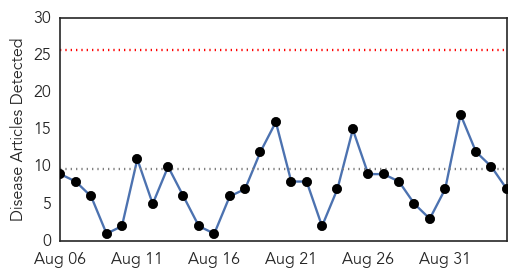
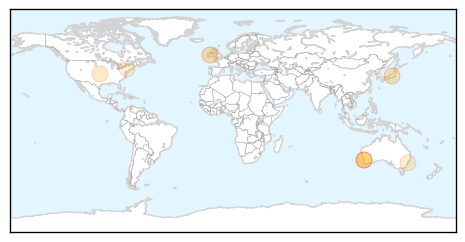
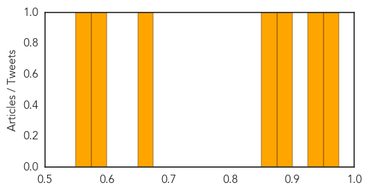

Influenza
30-Day Web Trend
0 alerts, 0 warnings

30-Day Twitter Trend
5 alerts, 0 warnings

Article Locations
Article Confidences
Top Articles:
- 0.951
- Fewer than one in four hospital staff got the flu jab last winter
- 0.943
- Broome students flown to Perth with viral encephalitis
- 0.894
- Viral encephalitis: Two Broome high school students airlifted to Perth, parents warned to be alert
- 0.857
- Flu Study, on Hold, Yields New Vaccine Technology
- 0.667
- Are Unvaccinated Children Immune to Contracting Enterovirus?
- 0.588
- UNC, Duke researchers team up to study how the flu spreads
- 0.553
- The Charleston Chronicle, September is National Sickle Cell Awareness Month
Top Tweets:
-
No tweets found for Sep 04, 2015
Chikungunya
30-Day Web Trend
1 alerts, 0 warnings

30-Day Twitter Trend
1 alerts, 0 warnings

Article Locations

Article Confidences

Top Articles:
-
No articles found for Sep 04, 2015
Top Tweets:
-
No tweets found for Sep 04, 2015